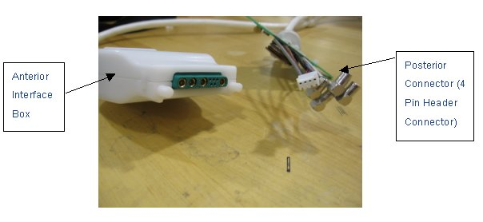

- 00000018WIA30061F20GYZ
- id_131075693.0
- Aug 29, 2019 1:53:34 AM
1.5T HD 8CH Body Array Coil Troubleshooting
Overview
The following tips can be used to troubleshoot common problems with the HD 8 CH Body Array Coil (GE/USAI P/N: 2415366).
Tools and Test Equipment
1. Digital Voltmeter
2. Some tests may require phantoms for IQ testing
Replacement Parts
Some tests may require FRUs for diagnosis
Required Conditions
The 8 Channel Body Array Coil must be installed in the system.
Procedure
Receiving No Signal
Problem:
You are unable to pre-scan or are scanning and yet receiving no signal.
Possible Solutions:
-
Verify that you have selected the appropriate system coil selection. Refer to the Operators Manual for additional information.
-
Verify the green light above Port A is illuminated. This indicates the coil is properly plugged into the system.
-
Verify that the landmark is correct and that the cradle has not unlatched.
-
Verify that the scan locations and any FOV offsets are correct.
-
Perform a Continuity Check on the external cable using the instructions detailed in section 4.4 (to be performed by a GE authorized Service Engineer only).
If you still cannot get a signal, try to scan (transmit and receive) with the body coil. If you still receive no signal the problem probably lies with your MR system. If the scan completes successfully, there is probably a problem with the coil. Contact GE for further assistance.
Image Quality
Problem:
Image quality is not as good as you expect from the Coil.
Possible Solution:
-
· Perform MCQA and review results.
-
· Perform a Continuity Check on the external cable using the instructions detailed in section 5.4 below (to be performed by a GE authorized Service Engineer only).
-
Verify that there are no loops in the cables.
-
Verify that there are no metal or ferromagnetic objects close to the coil, patient or magnet (i.e., safety pin, hair pin).
-
Verify that the coil is properly positioned.
-
Verify that your center frequency is within the frequency adjustment range for your system.
-
Verify that the R1, R2 and TG values from the pre-scan are within normally expected ranges.
Artifacts
Problem:
There is a black line or signal void on the image.
Possible Solution:
Verify that there is no metal present in the area being scanned in or on the patient.
Problem:
Some or all of the images appear shaded or exhibit uneven signal or banding.
Possible Solution:
Confirm that no metallic objects are located nearby, outside the FOV. This is especially important on images utilizing Fat Saturation.
If Fat Saturation is being used, verify that the CFA fine adjustment has been optimized.
External Cable Wear
Problem:
The system will not recognize the coil or scan with the coil attached.
Under no circumstances should the continuity of the center pin of the coax connectors be measured. They may be extremely fragile when improper tools are used.
Possible Solution1 - Visual Inspection:
Check the physical condition of following pins on the Hypertronics handle. Refer illustration 1-2 to locate the pins on the Hypertronics Handle.
A1-A2; C1-C4; D1-D4; J1-J3; J4-J10; M3; M5-M10


Replace the Cable assembly as per the HD 8CH Body Coil Cable Replacementprocedure if any of the above-mentioned pins are damaged.
If all the pins are ok, perform the DC Continuity check for the coil as per below procedure.
Possible Solution2 - DC Continuity Test:
-
Remove the cable as per procedure given in Section 4 (Step 1-5) of HD 8CH Body Coil Cable Replacementprocedure. Check the DC continuity between Coil Side Connectors (Anterior Interior Box with DC Connector Pin (Small Pin) and Posterior with 4 DC PIN Header Connector) and the Hypertronics coax connectors using Digital Voltmeter in resistance mode. Use some conductor pin to get the access to the center pin of the Anterior DC Pins. Perform the continuity check between the Hypertronics pin also as given in the Table 1. Replace the cable, if it fails to pass the continuity test specs as per Table 1.
-
Check if any of the pins from J1-J3 and J6- J8 of Hypertronics system connector is shorted to the ground. The outside conductor of a coaxial connector in column C or D can be used as ground. If any of the pins is shorted to ground, replace the cable as per HD 8CH Body Coil Cable Replacementprocedure.
-
Check for the ground pin continuity check between M5, M8 and the RF ground pin for C1.The resistance should be less than 1 Ohm. If it fails the ground pin continuity test, replace the cable as per HD 8CH Body Coil Cable Replacementprocedure
-
Perform the MCQA Test after the installation on the new cable.

| DC Continuity Check for Anterior Connector (small coax DC connector) | ||||
| SN | Anterior Interface Box DC Connector | Hypertronics system connector | Resistance (Ohms) Specification | |
| Refer Figure 1-2 | ||||
| 1 | 1 | J1 | 0.75 + 0.5 | |
| 2 | 2 | J3 | 0.75 + 0.5 | |
| 3 | 3 | J2 | 0.75 + 0.5 | |
| 4 | 4 | M3 | 3 + 0.5 | |
| DC Continuity Check for Posterior Connector (4 PIN HEADER CONN) | ||||
| Posterior side 4 PIN DC Header Connector (White) | Hypertronics system connector | Resistance (Ohms) Specification | ||
| Refer Figure 1-2 | ||||
| 5 | 1 (Red Wired) | J8 | 0.75 + 0.5 | |
| 6 | 2 (Grey Wired) | J6 | 0.75 + 0.5 | |
| 7 | 3 (Blue Wired) | J7 | 0.75 + 0.5 | |
| 8 | 4 (Brown Wired) | M3 | 3 + 0.5 | |